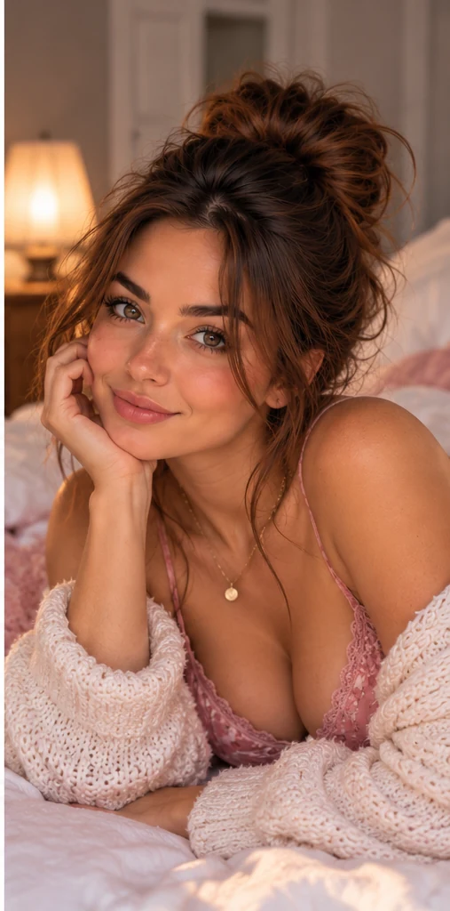
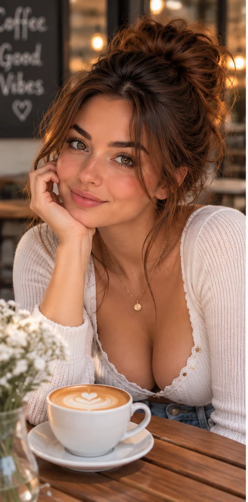

HELLO, LOVELY ♡
Hi, I'm Sophie.
A little sweetness, just for you.
Cozy mornings, golden-hour walks, and little moments worth sharing. Come get to know my world.
Explore my world ↗
A NOTE FROM SOPHIE'S WORLD
Sweet moments, beautifully imagined.
Sophie Lane is a fictional 26-year-old virtual personality with a love for slow mornings, beach sunsets, fresh flowers, and a good cup of coffee.
Her world is a creative story told through AI-generated images and thoughtful captions. There's no real person behind the character's likeness, and any automated interactions will be clearly identified.
A peek into my world ↗LITTLE MOMENTS
Postcards from my world.
Three scenes, one familiar face. Every image is AI-generated.

STAY A LITTLE LONGER
There's more to the story.
Explore more of Sophie Lane’s fictional, AI-generated world on Fanvue.
Visit my Fanvue ♡You’ll be redirected to Fanvue. Content is intended for adults 18+.
Transparency matters.
Sophie Lane is a completely fictional, AI-generated adult character. All portraits and lifestyle scenes on this site are synthetic and do not depict an actual person or real-life events. This website is a creative promotional concept, not a real-person dating or messaging service.
For adults 18+. Future paid content and interactions, if offered, will follow applicable platform rules and clearly disclose AI involvement.